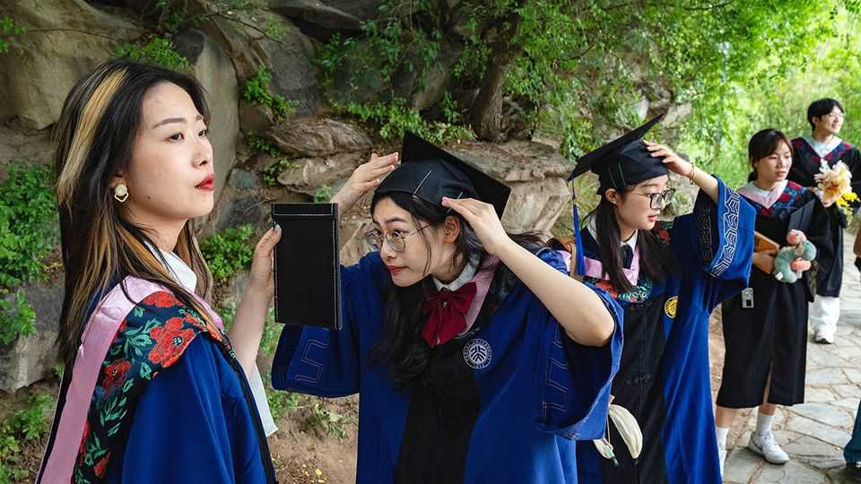
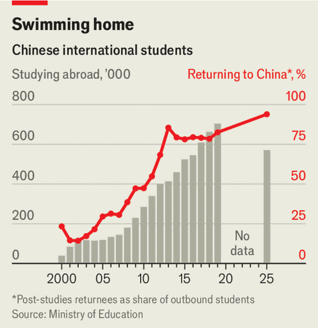

Why ever fewer young Chinese study abroad
Those who do are more likely to return home afterwards

Aug 6th 2026
WHEN YANG FAN, a consultant in Beijing advising students and their parents on overseas education, first joined the industry 15 years ago, those who studied abroad were held in high regard. Parents wanted their children to see the world, hoping they would pick up valuable experience and skills along the way. That is much less the case today. Parents, Ms Yang says, “feel that the quality of domestic universities isn’t so bad, so they ask: ‘why should I spend so much money to go abroad?’”
The number of students a country has abroad in part reflects its engagement with the world. After 2001, when China joined the World Trade Organisation, Chinese exports to the world boomed; so, too, did the number studying overseas. At first only exceptional or privileged students tended to make the move. Many then stayed, taking up positions in academia and industry; those who returned to China enjoyed high status and offers of plum jobs.
Later, as general incomes rose, increasing numbers of young men and women set off in search of a Western education in the hope of a brighter future. Yet since 2019, the pandemic, trade wars and rising geopolitical friction have driven a wedge between China and the rest of the world. Partly as a consequence, the number of students going abroad has fallen. In 2025 some 570,000 young Chinese went to study overseas, down from a peak of 700,000 in 2019 (see chart); that was the lowest level since 2016.

Studying abroad has been made harder by some receiving countries. In 2025 the administration of President Donald Trump announced that it would “aggressively revoke” visas for Chinese studying in unspecified “critical fields”. It has also tied the lottery for the H-1B visa—the main path for skilled workers, including new graduates, to remain in America—to salaries, which disfavours entry-level workers; anecdotally, Chinese workers are hurt more than most. Ms Hao, a 25-year-old Chinese woman, was working for a startup in America but recently chose to return to China because her visa status made it almost impossible to switch employers.
The ballooning cost of a foreign education has not helped either. The average cost of foreign study is 605,000 yuan ($89,600) this year, nearly a fifth higher than in 2023, according to a survey by New Oriental, a big tutoring company. A weak economy at home has forced families to watch their spending and has made students more cost-conscious. Of those still heading overseas, more are going to places that deliver better perceived value for money. Though official Chinese statistics do not break down where the country’s international students go, data published by other countries show that their numbers are falling in Britain, America and Canada, while rising in Hong Kong, Japan and Australia. Hong Kong in particular has emerged as a top choice among prospective students, says Ms Yang, because of its highly ranked schools and closeness to home. As many as four out of five of her clients enquire about studying there. Cheaper destinations such as Malaysia, where students can budget just 100,000 yuan for a degree, also appeal.
It is not just that more Chinese students are staying home—a record 10.7m entered tertiary education in China last year. Of those who do go abroad, more and more choose to come back to China after their studies. Last year the proportion of returnees, who are known as haigui or sea turtles, was 94% of outbound students, an all-time high (see chart). Between 2015 and 2025, 5.2m haigui graduates returned to China, official statistics show. This sizeable wave means that an overseas education no longer carries the same cachet that it once did. On job markets as well as on dating sites, people are much less likely to be impressed by a foreign education. Today, the average returnee from abroad gets a starting salary of about 12,800 yuan a month, only marginally higher than the 10,700 yuan for local graduates, according to New Oriental’s data. Many haigui do far worse, with some taking on delivery gigs. On one Chinese television show, a young woman claimed that her parents spent over 2m yuan to send her abroad, only for her to get a job that paid just 4,000 yuan a month. It would take her a century to save that much, she rued.
One Chinese student, Ms Zou, pursuing a chemistry master’s degree at University College London, chose study abroad because she wanted to “see the world"; but she does not expect to gain an upper hand over home-grown graduates when she returns to China seeking a job in the chipmaking industry. Domestically educated graduates will have studied for three years to get their master’s, compared with just one year for her. Students from China make up some 40% of Ms Zou’s class; elsewhere, the proportion can reach nine-tenths, which somewhat undermines the point that foreign universities are meant to be different from China’s.
Among employers, foreign degrees no longer confer the same advantage. Short study durations and fairly low entry requirements mean that companies increasingly question the once gilt-edged reputation of a foreign education. Studying abroad does not automatically translate into an ability to fit into the workplace. Moreover, human-resource departments may also think that domestic graduates are “more obedient”, says Ms Zou, since they are untainted by Western liberal influence. Some provincial governments make it harder for overseas graduates to become civil servants. In 2024 the boss of Gree, an electronics conglomerate, said she didn’t hire haigui because they could be spies.
Meanwhile, home universities look increasingly attractive. Chinese universities have shot up the international leaderboards. Peking University and Tsinghua University, the country’s two top schools, now rank 13th and 14th respectively in the QS World University Rankings. Universities belonging to the “985” and “211”, monikers for an elite handful of Chinese universities, are seen as stronger than many overseas institutions (though big names like Oxford, Cambridge and America’s Ivy League are still viewed as superior). In areas such as science and engineering, Chinese research excels. Tuition, typically a few thousand yuan per year at a public university, is substantially cheaper.
Abroad, shrinking enrolment is now hurting some universities that had become overly reliant on Chinese students. In the 2024-25 academic year Chinese made up more than two-fifths of international students at the Russell Group of 24 top British universities. Many of them expanded master’s programmes to attract students from China, charging them fees far above those of home students. Faculties grew and new facilities were built. There was an “illusion of financial stability”, says Filippo Boeri, at City St George’s, University of London. But now universities are closing courses and laying off staff or asking them to take voluntary redundancy.
Chinese students drying up will deprive the West of valuable talent. It may also do no good for China. As the country opened up to the world, haigui brought home skills and knowledge acquired overseas. The group were key in helping the country to modernise and the economy to catch up (eight of the 21 current members of the Communist Party’s ruling Politburo studied abroad). The international experience of the haigui has also helped Chinese firms seeking a foothold in foreign markets. When fewer turtles swim the seas, China will surely suffer too. ■
Subscribers can sign up to Drum Tower, our new weekly newsletter, to understand what the world makes of China—and what China makes of the world.